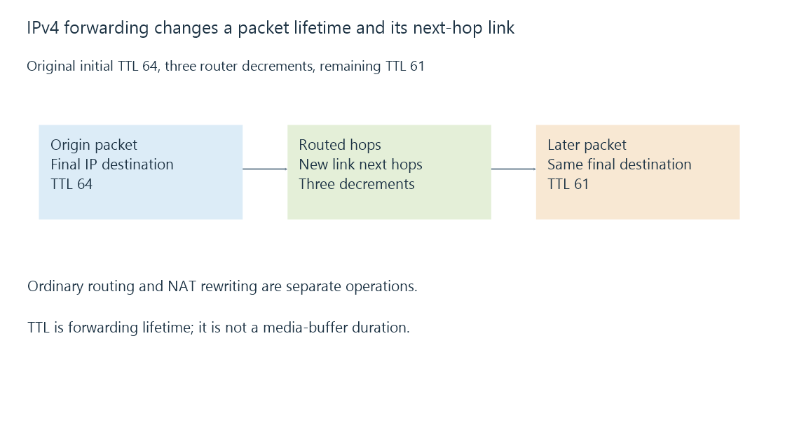

IPv4 packet addressing and forwarding
IPv4 carries packets between 32-bit source and destination addresses, with routing, packet lifetime and fragmentation separate from the transport service carried inside.
An IPv4 address such as 192.168.50.20 contains four eight-bit values. Together they form a 32-bit address.
The dotted form is readable notation for those bits. It does not tell you the subnet size, the service port or whether another network has a route to the address.
Four bytes describe one address
For this original value:
192.168.50.20
11000000 . 10101000 . 00110010 . 00010100
Each displayed number lies from zero to 255. Prefix length supplies the separate network grouping used by CIDR.
An address beginning with 192 does not automatically have a particular “class C” subnet in a modern configured network. The actual prefix and routes determine the boundary.
Routers preserve the final destination while selecting each hop
A packet for an off-link server is sent first to the chosen router on the local link. The link-layer frame is addressed to that next hop; the IP destination remains the intended server.
At another hop, the frame’s local addressing changes again. Ordinary routing does not need to replace the final destination with every router’s address.
NAT is a separate operation that can rewrite IP/transport endpoint fields. Address translation develops that added state.
Packet lifetime is not a playback timer
IPv4’s TTL bounds forwarding lifetime. Routers decrement it, and a packet cannot keep circulating indefinitely.
This original reduced projection assumes one decrement at each listed router:
{
"initialTtl": 64,
"routerHops": 3,
"remainingTtl": 61
}
It does not describe sixty-one seconds of movie buffer. A forwarding-lifetime value and media presentation time have different purposes.

Packet size belongs to the chosen path
In a declared 1500-byte IP packet with a minimum twenty-byte IPv4 header, 1480 bytes remain for the carried transport and its data.
If that transport is UDP with its eight-byte header, the application payload is 1472 bytes under those assumptions.
Options, tunnels or a smaller path limit change the result. Fragmentation can divide an IPv4 datagram, but all required pieces must arrive for reassembly. Losing one fragment can consequently lose the larger datagram’s usable result.
See Also
- IP addresses and reachable interfaces
- Subnets, CIDR and matching routes
- NAT and address/port translation state
- IPv6 addressing, scope and reachability